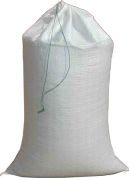

KT-509-3/Maths-8(M) Vol-2
Page 33

Page 34

ഗണിതം ഭാഗങ്ങളുടെ ബന്ധം
ഈ ചിത്രം നോക്കൂ: $ $ അ
$
$
$
$
ആ
എന്ന വരയെ അഞ്ച് സമഭാഗ-ങ്ങളാക്കിയിരിക്കുന്നു. ആദ്യത്തെ മൂന്ന്ഭാഗം ചേർന്നതിനെ അജ എന്ന് വിളിച്ചാൽ അജ, ആജ എന്നീ വരക-ളുടെ നീളം തമ്മിലുള്ള ബന്ധം എങ്ങനെയെല്ലാം പറയാം? $ $ $ $ $ $ ജ
അആ
അ
ഇ
അജ, ആജ
ആ
ഇവയ്ക്ക് അആ യുമായുള്ള ബന്ധം
$ അആ യുടെ 53 ഭാഗമാണ് അജ ഇ
$ അആ യുടെ 52 ഭാഗമാണ് ആജ അജ യും, ആജ യും തമ്മിലുള്ള ബന്ധം $ അജ യുടെ 23 ഭാഗമാണ് ആജ
ഇ
$ ആജ യുടെ 32 മടങ്ങാണ് അജ അജ, ആജ ഇവയ്ക്ക് 2, 3 എന്നീ എണ്ണൽസംഖ്യക-ളുമായുള്ള ബന്ധം $ അജ യുടെ 2 മടങ്ങും, ആജ യുടെ 3 മടങ്ങും തുല്യമാണ്.
$ അജ യുടെ 13 ഭാഗവും, ആജ യുടെ 12 ഭാഗവും തുല്യമാണ്; ഈ നീളത്തിന്റെ 3 മടങ്ങാണ് അജ; 2 മടങ്ങാണ് ആജ ഇക്കാര്യമെല്ലാം ചേർത്ത്, എങ്ങനെ പറയാം? അജ, ആജ എന്നീ നീളങ്ങൾ തമ്മിലുള്ള അംശബന്ധം 3 : 2. ഇവിടെ അആ യുടെ ശരിയായ നീളം എന്താണെന്ന് പറഞ്ഞിട്ടില്ലല്ലോ. ചുവടെയുള്ള ചിത്രത്തിൽ ഇത് 5 സെന്റിമീറ്ററാണ്:
130
ഭാഗം - 2
Page 35


ക്ലാസ് - 8
അപ്പോൾ അജ യുടെ നീളം 3 സെന്റിമീറ്റർ, ആജ യുടെ നീളം 2 സെന്റിമീറ്റർ, അആ യുടെ നീളം ഇരട്ടിച്ചാലോ? യുടെ നീളം 3 ണ്മ 2 = 6 സെന്റിമീറ്ററും ആജ യുടെ നീളം അംശബ-ന്ധവും രസത-ന്ത്രവും സെന്റിമീറ്ററും ആകും. പക്ഷേ മുകളിലെഴുതിയ രസത-ന്ത്രത്തിൽ പദാർഥങ്ങളെ മൂലകബന്ധങ്ങളൊന്നും മാറിയിട്ടല്ലല്ലോ. ങ്ങൾ എന്നും സംയുക്തങ്ങൾ എന്നും തരം തിരിച്ചിട്ടുണ്ടല്ലോ. അആ യുടെ നീളം പകുതിയാക്കിയാലോ? അജ 2ണ്മ2=4
ഏതു സംയുക്തത്തിലും അതില-ടങ്ങുന്ന മൂലക-ങ്ങളുടെ ദ്രവ-്യമാനം (ാമ)ൈ ഒരു നിശ്ചിത അംശ- ബ - ന്ധ - ത്ത ഇ- ല ആ- യ ഇ- ര ഇ- ക്ക ഉമെന്ന് പതിനെട്ടാം നൂറ്റാണ്ടിൽ ജോസഫ് പ്രൂസ്റ്റ് എന്ന ശാസ് ്രത- ജ്ഞ ൻ കണ്ടെത്തി.
സെന്റിമീറ്റ-ർ, ആജ = 2 ണ്മ = 1 സെന്റിമീറ്റർ. എന്നാലും പഴയ ബന്ധങ്ങൾക്ക് മാറ്റമില്ല. ഉദാഹ-രണ-മായി കോപ്പർ കാർബണേഎപ്പോഴും കാർബണ-ിന്റെ ദ്രവ-്യമാഇനി രണ്ട് നീളങ്ങൾ തമ്മിലുള്ള അംശബന്ധം 3 : 5 എന്ന് റ്റിൽ നത്തിന്റെ മടങ്ങ് കോപ്പറും, കാർബപറഞ്ഞാലോ? ണിന്റെ മടങ്ങ് ഓക്സിജനും ആയിഎന്ന് പരീ- ക്ഷ - ണ - ങ്ങ - ള ഇ- ല ഊടെ ശരിയായ നീളങ്ങൾ എന്താണെന്ന് പറയാൻ കഴിയില്ല. രിക്കും അദ്ദേഹം കണ്ടെത്തി. അത് 3 സെന്റിമീറ്ററും 5 സെന്റിമീറ്ററും തന്നെ ആവാം; മൂലക-ങ്ങളുടെ തീരെ ചെറിയ കണികഅല്ലെങ്കിൽ കൾ സങ്കല്പിച്ചാൽ ഇത്തരം താരത-മ്യം 6 സെന്റിമീറ്റർ, 10 സെന്റിമീറ്റർ എണ്ണൽ സംഖ-്യക-ളിലൂടെ ആവാം എന്ന ചിന്തയാകണം, പരമാണു എന്ന ആശ1 സെന്റിമീറ്റർ, 2 സെന്റിമീറ്റർ യത്തിലേക്ക് നയിച്ചത്. പത്തൊമ്പതാം നൂറ്റാ- ണ്ട ഇൽ ജോൺ ഡാൽട്ടൻ എന്ന 6 മീറ്റർ, 10 മീറ്റർ ശാസ് ്രത- ജ്ഞ - ന ആണ് ഇത്തരം ഒരു സിദ്ധാന്തം അവത-രിപ്പിച്ചത്. എന്നിങ്ങനെ പലതുമാവാം. സിദ്ധാന്തമ-നുസ-രിച്ച് മൂലകഇതൊന്നുമ-ല്ലെങ്കിൽ ഏതോ ഒരു ചരടുകൊണ്ട് അളന്ന- ഡാൽട്ടന്റെ ങ്ങളുടെ തീരെ ചെറിയ കണിക-കളായ പ്പോൾ, ആദ്യത്തേതിന്റെ നീളം 3 ചരട്, രണ്ടാമ-ത്തേതിന്റെ പരമാണുക്കൾ ചേർന്നാ- ണ ് നീളം 5 ചരട് എന്ന് കിട്ടിയ-താവാം. സംയുക്ത--ങ്ങൾ ഉണ്ടാകുത്. ഏതു സംയുക്തഎന്തായാലും, ആദ്യത്തേത് ഏതോ ഒരു നിശ്ചിത നീള- ന്നത്തിലും ത്തിന്റെ 3 മടങ്ങും, രണ്ടാമ-ത്തേത് അതേ നീളത്തിന്റെ 5 വിവിധ മൂലകഅതിലെ - ങ്ങ - ള ഉടെ മടങ്ങും ആണെന്ന് പറയാം. പരമാണുക്കളുടെ എണ്ണം നിശ്ചിത അംശബഅൽപം ബീജഗ-ണിത-മുപ-യോഗിച്ച്, ഈ നിശ്ചിത നീളം ഒരു ന്ധത്തിലാണ്. ഃ സെന്റിമീറ്റർ എന്നെടുത്താൽ, ആദ്യത്തെ നീളം 3ഃ സെന്റിമീറ്റർ, രണ്ടാമത്തെ നീളം 5ഃ സെന്റിമീറ്റർ എന്ന് പൊതുവായി പറയാം. 1
1
1 2
അജ = 3 ണ്മ 2 = 1 2
5.3
4
1 2
1 2
(മീോ)െ
അംശബന്ധം
131 131
Page 36
ഗണിതം മറ്റള-വുക-ളുടെ അംശബ-ന്ധത്തിലും ഇതു പറയാം; ഉദാഹ-രണ-മായി, രണ്ട് കുപ്പിക-ളുടെ ഉള്ളള-വുകൾ തമ്മിലുള്ള അംശബന്ധം 3 : 5 എന്നാൽ, ഏതോ ഒരു പാത്രമെടുത്ത് രണ്ടും നിറച്ചപ്പോൾ, ആദ്യമൂലക-ബന്ധം ജീവൻ നിലനിർത്താൻ വേണ്ട ഘടക-ങ്ങ- ത്തേത് നിറയാൻ 3 തവണ-യും, രണ്ടാമ-ത്തേതു നിറയാൻ ളിൽ പ്രധാന-പ്പെട്ടതാണ് ജലം. മനുഷ്യശ- 5 തവണയും ഒഴിക്കേണ്ടി വന്നു എന്ന് പറയാം. രീര-ത്തിൽ ഏറ്റവും കൂടുതൽ അടങ്ങിയിരി- അളവ് പാത്രത്തിൽ ഃ മില്ലിലിറ്റർ വെള്ളം കൊള്ളും എന്നെക്കുന്ന പദാർഥവും ജലം തന്നെ. ഈ ജല- ടുത്താൽ, ആദ്യത്തെ കുപ്പിയിൽ 3ഃ മില്ലിലിറ്ററും, രണ്ടാത്തിൽ ഹൈഡ്രജൻ, ഓക്സിജൻ എന്നീ മത്തെ കുപ്പിയിൽ 5ഃ മില്ലിലിറ്ററും വെള്ളം കൊള്ളും എന്ന് മൂലക-ങ്ങളാണ് അടങ്ങിയിരിക്കുന്നത്. ഈ പൊതുവായി പറയാം. മൂലക-ങ്ങൾ ഏത് അളവിലാണ് ജലത്തിൽ ഒരു ക്ലാസിലെ ആൺകുട്ടിക-ളുടെയും പെൺകുട്ടിക-ളുടെയും അടങ്ങിയിരിക്കുന്നതെന്ന് അറിയാമോ? ഒരു ജലത-ന്മാത്രയിൽ 2 ഹൈഡ്രജൻ ആറ്റ- എണ്ണം, 3 : 5 എന്ന അംശ- ബ - ന്ധ - ത്ത ഇ- ല ആ- എണന്നു പറങ്ങളും 1 ഓക്സിജൻ ആറ്റവുമാണുള്ളത്. ഞ്ഞാലോ? അതായ-ത്, രസത-ന്ത്രത്തിൽ ജലത്തിന്റെ ശരിയായ എണ്ണം 30 ഉം 50 ഉം ആണെങ്കിൽ, 10 കുട്ടികൾ ചുരുക്കെഴുത്ത് ഒ2ഛ. അതായ-ത്, ജലത്തിൽ വീതമുള്ള 3 കൂട്ടമായി ആൺകുട്ടിക-ളെയും 5 കൂട്ടമായി ഹൈഡ്രജ-ന്റെയും ഓക്സിന്റെയും അംശപെൺകുട്ടിക-ളെയും കാണാം. ബന്ധം 2 : 1. നാം ഉപ- ഏയാ- ഗ ഇ- ക്ക ഉന്ന കറി- യ ഉ- പ്പ ഇൽ ശരിയായ എണ്ണം 15 ഉം 25 ഉം ആണെങ്കിൽ, 5 കുട്ടികൾ അടങ്ങിയിരിക്കുന്ന മൂലകങ്ങൾ സോഡി വീതമുള്ള 3 കൂട്ടമായി ആൺകുട്ടിക-ളെയും 5 കൂട്ടമായി യവും (ചമ) ക്ലോറിനും (ഇഹ) ആണ്. ഇവയുടെ പെൺകുട്ടിക-ളെയും കാണാം. അളവുകൾ തുല്യമാണ്. അതായ-ത്, ഇവ തമ്മിലുള്ള അംശബന്ധം 1 : 1. കറിയുപ്പിന്റെ ഏതായാലും, ഒരേ എണ്ണം കുട്ടിക-ളുള്ള 3 കൂട്ടമായി ആൺകുട്ടിക-ളെയും 5 കൂട്ടമായി പെൺകുട്ടിക-ളെയും ചുരുക്കെഴുത്ത് ചമഇഹ. കാണാം. ഒരു കൂട്ടത്തിലെ കുട്ടിക-ളുടെ എണ്ണം ഃ എന്നെടുത്താൽ, ആൺകുട്ടികളുടെ എണ്ണം 3ഃ പെൺകുട്ടിക-ളുടെ എണ്ണം 5ഃ. ഈ ഉദാഹ-രണ-ങ്ങളിൽ നിന്നെല്ലാം കാണുന്ന പൊതുതത്വം എന്താണ്?
രണ്ടള-വുകൾ തമ്മിലുള്ള അംശബന്ധം മ : യ ആണെങ്കിൽ, ആദ്യത്തെ അളവ് മഃ ഉം രണ്ടാമത്തെ അളവ് യഃ ഉം ആകുന്ന ഃ എന്നൊരു അളവുണ്ട്.
അംശബന്ധം എന്ന പാഠത്തിലെ ഭാഗക്കണ-ക്ക്) 24 മീറ്റർ ചുറ്റള-വുള്ള ഒരു ചതുര-ത്തിന്റെ വീതിയും നീളവും 3 : 5 എന്ന അംശബ-ന്ധത്തിലാണ്. വീതിയും നീളവും എത്ര മീറ്ററാണ്? എങ്ങനെയാണ് ഇതു ചെയ്തത്? ബീജഗ-ണിതം ഉപയോഗിച്ച് മറ്റൊരു രീതിയിലും കണക്കാക്കാം. വീതിയും നീളവും തമ്മിലുള്ള അംശബന്ധം 3 : 5 ആയതിനാൽ, വീതി 3ഃ മീറ്റർ, നീളം 5ഃ മീറ്റർ എന്നെടുക്കാം. ഃ കണ്ടുപിടിക്കാൻ, കണക്കിൽ പറഞ്ഞിട്ടുള്ള ചുറ്റളവ് ഉപയോഗിക്കാം. വീതിയും നീളവും 3ഃ മീറ്റർ, 5ഃ മീറ്റർ ആയതിനാൽ, ചുറ്റള-വ്, 2 (3ഃ + 5ഃ) = 16ഃ മീറ്റർ ഇനി ഏഴാം ക്ലാസിൽ ചെയ്ത ഒരു കണക്കു നോക്കൂ: (
132
ഭാഗം - 2
Page 37
ക്ലാസ് - 8 ഇത് 24 മീറ്റർ എന്ന് പറഞ്ഞിട്ടുണ്ട്. അപ്പോൾ 16ഃ = 24; അതിൽനിന്ന് 24
ഃ = 16 =
3 2
ഇനി വീതിയും നീളവും കണ്ടുപിടിക്കാമല്ലോ: വീതി = 3 ണ്മ 32 മീറ്റർ = 4 12 മീറ്റർ നീളം = 5 ണ്മ 32 മീറ്റർ = 7 12 മീറ്റർ
മറ്റൊരു കണക്ക്: ഒരു ചതുര-ത്തിന്റെ വീതിയും നീളവും 4 : 7 എന്ന അംശബ-ന്ധത്തിലാണ്; നീളം, വീതിയേക്കാൾ 15 മീറ്റർ കൂടുത-ലാണ്. വീതിയും നീളവും എത്ര -മീറ്ററാണ്? മധുരിക്കുന്ന അംശബന്ധം സാരയിൽ ഏതെല്ലാം മൂലക-ങ്ങളാണുപറഞ്ഞിരിക്കുന്ന അംശബ-ന്ധമ-നുസ-രിച്ച്, നീളവും പഞ്ചള്ളത് എന്നറിയാമോ? വീതിയും കൂട്ടിയ-തിന്റെ 114 ഭാഗമാണ് വീതി; 117 ഭാഗം കാർബൺ, ഹൈഡ്രജൻ, ഓക്സിജൻ ഇവ ഓരോന്നും പല അളവുക-ളുക-ളിലാണുള്ളനീളവും. ത്. 12 കാർബൺ ആറ്റവും, 22 ഹൈഡ്രജൻ ആറ്റവും, 11 ഓക്സിജൻ ആറ്റവും അടഅപ്പോൾ നീളവും വീതിയും തമ്മിലുള്ള വ്യത്യാസം, അവ- ങ്ങിയതാണ് പഞ്ചസാര-യുടെ ഒരു തന്മാത്ര. യുടെ തുകയുടെ 117 − 114 = 113 ഭാഗമാണ്. ഈ അതായ-ത്, പഞ്ചസാര-യിലെ കാർബൺ, ജൻ, ഓക്സിജൻ എന്നിവയുടെ വ്യത്യാസം 15 മീറ്ററാണെന്ന് പറഞ്ഞിട്ടുണ്ടല്ലോ. അപ്പോൾ ഹൈഡ്രഅംശബ-ന്ധം 12 : 22 : 11. പഞ്ചസാര തന്മാ11 15 ന്റെ മടങ്ങ ആണ ് നീളത്ത ഇ എന്റയും വീതിയ ഉ എടയും ത്രയുടെ ചുരുക്കെഴുത്ത്ഇ ഒ ഛ . പഞ്ച3 സാര ചൂടാക്കിയാൽ എന്താണ് സംഭവിതുക; അതായ-ത്, ക്കുക? കാരണം എന്താണ്? 11 15 മീറ്റർ ണ്മ = 55 മീറ്റർ 3 ഇനി നീളവും വീതിയും കണക്കാക്കാം: നീളം = 55 ണ്മ 117 = 35 മീറ്റർ വീതി = 35 − 15 = 20 മീറ്റർ ആദ്യത്തെ കണക്കിലെപ്പോലെ ബീജഗ-ണിത-മുപ-യോഗിച്ചും ചെയ്യാം. വീതി 4ഃ, നീളം 7ഃ എന്നെടുക്കാം. ഇതനുസ-രിച്ച്, നീളം വീതിയേക്കാൾ 7ഃ − 4ഃ = 3ഃ സെന്റിമീറ്റർ കൂടുതലാണ്; ഇത് 15 -മീറ്ററാണെന്ന് പറഞ്ഞിട്ടുണ്ട്. അപ്പോൾ 3ഃ = 15 എന്നും, അതിൽനിന്ന് ഃ = 5 എന്നും കിട്ടുമ-ല്ലോ. ഇനി വീതിയും നീളവും കണക്കാക്കാം: വീതി = 4 ണ്മ 5 മീറ്റർ = 20 മീറ്റർ നീളം = 7 ണ്മ 5 മീറ്റർ = 35 മീറ്റർ 12
22
11
അംശബന്ധം
133 133
Page 38

ഗണിതം ഒരു കണക്കുകൂടി: ഒരു ചതുര-ത്തിന്റെ വീതിയും നീളവും 4 : 5 എന്ന അംശബ-ന്ധത്തിലാണ്. അതിന്റെ പരപ്പളവ് 320 ചതുര-ശ്രമീറ്റർ. വീതിയും നീളവും എത്ര മീറ്ററാണ്? വീതി 4ഃ മീറ്റർ, നീളം 5ഃ മീറ്റർ എന്നെടുത്താൽ, പരപ്പളവ് 4ഃ ണ്മ 5ഃ = 20ഃ2 ചതുര-ശ്രമീറ്റർ ഇത് 320 ചതുര-ശ്രമീറ്റർ എന്നറിയാവുന്നതിനാൽ
20ഃ2 = 320 ഃ2 എന്ന സംഖ്യയുടെ 20 മടങ്ങ് 320 എന്നല്ലേ ഇതിന്റെ അർഥം? അപ്പോൾ ഈ സംഖ്യ 320 ÷ 20 = 16; അതായത് ഃ2 = 16 വർഗം 16 ആയ സംഖ്യ 4 ആണല്ലോ. അതിനാൽ ഃ = 4 വീതി 4 ണ്മ 4 മീറ്റർ = 16 മീറ്റർ നീളം 5 ണ്മ 4 മീറ്റർ = 20 മീറ്റർ
ഈ കണക്കിൽ വീതി 4 മീറ്റർ, നീളം 5 മീറ്റർ എന്നെടുത്താൽ, പരപ്പളവ് 20 ചതുര-ശ്രമീറ്റർ; കണക്കിൽ പറഞ്ഞ പരപ്പളവ് ഇതിന്റെ 16 മടങ്ങാണ്. അപ്പോൾ വീതി 4 മീറ്ററിന്റെ 16 മടങ്ങും, നീളം 5 മീറ്ററിന്റെ 16 മടങ്ങും, എന്ന് കണക്കാക്കിയാൽ ശരിയാകാത്തത് എന്തുകൊണ്ടാണ്? 1)
ഒരു സമബ-ഹുഭുജ-ത്തിന്റെ അകക്കോണിന്റെയും പുറംകോണിന്റെയും അളവുകൾ തമ്മിലുള്ള അംശബന്ധം 7 : 2 ആണ്. ഓരോ കോണും എത്രയാണ്? ഈ ബഹുഭുജ-ത്തിന് എത്ര വശങ്ങളുണ്ട്?
2)
ഒരു ക്ലാസിലെ പെൺകുട്ടിക-ളുടെയും ആൺകുട്ടിക-ളുടെയും എണ്ണം
7 : 5 എന്ന അംശബ-ന്ധത്തിലാണ്. ആൺകുട്ടിക-ളുടെ എണ്ണത്തേക്കാൾ 8 കൂടുത-ലാണ് പെൺകുട്ടിക-ളുടെ എണ്ണം. ക്ലാസ്സിൽ എത്ര പെൺകുട്ടിക-ളും, എത്ര ആൺകുട്ടിക-ളുമുണ്ട്?
3)
2 : 5 എന്ന അംശബ-ന്ധത്തിൽ കലർത്തി പുതിയ നിറമുണ്ടാക്കി. നീലച്ചായ-ത്തേക്കാൾ 6 ലിറ്റർ
നീലയും മഞ്ഞയും ചായ- ങ്ങ ൾ
കൂടുത-ലാണ് മഞ്ഞച്ചായം. ഓരോന്നും എത്ര ലിറ്ററാണ് എടുത്തത്?
4)
നാല് മട്ടത്രികോണ-ങ്ങൾ; എല്ലാറ്റിലും ലംബവ-ശങ്ങളുടെ അംശബന്ധം 3 : 4 ആണ്. ഓരോ ത്രികോണത്തെക്കുറിച്ചും മറ്റൊരു വിവരംകൂടി ചുവടെ കൊടുത്തിരിക്കുന്നു. വശങ്ങളുടെയെല്ലാം നീളം കണക്കാക്കുക.
134
ഭാഗം - 2
Page 39
ക്ലാസ് - 8 ലംബവ-ശങ്ങളുടെ നീളം തമ്മിലുള്ള വ്യത്യാസം 24 മീറ്റർ ശശ) കർണം 24 മീറ്റർ ശശശ) ചുറ്റളവ് 24 മീറ്റർ ശ്) പരപ്പളവ് 24 ചതുര-ശ്രമീറ്റർ ശ)
മാറുന്ന ബന്ധങ്ങൾ
ഒരു ചതുര-ത്തിന്റെ നീളം 6 സെന്റിമീറ്റർ, വീതി 4 സെന്റിമീറ്റർ; അപ്പോൾ നീളവും വീതിയും തമ്മിലുള്ള അംശബന്ധം 3 : 2 നീളം 2 സെന്റിമീറ്റർ കൂട്ടി, ചതുരം വലുതാക്കിയാലോ? നീളവും വീതിയും 8 സെന്റിമീറ്റർ, 4 സെന്റിമീറ്റർ; അംശബന്ധം 2 : 1 മറിച്ചൊരു ചോദ്യം: ഒരു ചതുര-ത്തിന്റെ നീളവും വീതിയും തമ്മിലുള്ള ഒരു ചതുര-ത്തിന്റെ നീളവും വീതിയും 33 സെന്റിമീറ്റ-ർ, അംശബന്ധം 3 : 2; നീളം 2 സെന്റിമീറ്റർ കൂട്ടി ചതുരം 1 സെന്റിമീറ്റർ. മറ്റൊരു വലുതാക്കിയ-പ്പോൾ, ഈ അംശബന്ധം 5 : 3 ആയി. ചതുര-ത്തിന്റെ നീളവും ആദ്യത്തെ ചതുര-ത്തിന്റെ നീളവും വീതിയും എത്രവീതിയും 11 സെന്റിമീറ്റർ, 6 യായിരുന്നു? സെന്റിമീറ്റർ.ഈ ചതുര-ങ്ങളുടെ ആദ്യത്തെ ചതുര-ത്തിന്റെ നീളവും വീതിയും തമ്മിലുള്ള അംശ- ചുറ്റള-വുകൾ തമ്മിലുള്ള അംശബന്ധം എന്താണ്? ബന്ധം 3 : 2 ആയതിനാൽ, ശരിക്കുള്ള നീളവും വീതിയും പരപ്പള-വുകൾ തമ്മിലോ?
അങ്ങോട്ടും ഇങ്ങോട്ടും
3ഃ സെന്റിമീറ്റർ, 2ഃ സെന്റിമീറ്റർ എന്നെടുക്കാം.
നീളം 2 സെന്റിമീറ്റർ കൂട്ടിയ-പ്പോൾ, ഇവ 3ഃ + 2 സെന്റിമീറ്റർ, 2ഃ സെന്റിമീറ്റർ എന്നാകും. ഇവ തമ്മിലുള്ള അംശബന്ധം 5 : 3 എന്നാണ് പറഞ്ഞിരിക്കുന്നത്. ഈ വിവരം ഉപയോഗിച്ച് ഃ എന്ന സംഖ്യ എന്താണെന്ന് കണ്ടുപിടിക്കണം.
ഇങ്ങനെ ബന്ധപ്പെടുന്ന മറ്റു ജോടിച-തുര-ങ്ങൾ കണ്ടുപിടിക്കാമോ?
രണ്ടള-വുകൾ തമ്മിലുള്ള അംശബന്ധം 5 : 3 എന്ന് പറഞ്ഞാൽ, അവയിൽ വലുതിന്റെ 3 മടങ്ങും, ചെറുതിന്റെ 5 മടങ്ങും തുല്യമാണെന്നും അർഥമുണ്ടല്ലോ. നമ്മുടെ കണക്കിൽ, വലിയ നീളം 3ഃ + 2 സെന്റിമീറ്റർ, ചെറിയ നീളം 2ഃ സെന്റിമീറ്റർ; അപ്പോൾ ഇവ തമ്മിലുള്ള ബന്ധം 3(3ഃ + 2) = 5 ണ്മ 2ഃ
ഇത് ചുരുക്കി, ഇങ്ങനെയെഴുതാം; 9ഃ + 6 = 10ഃ
ഇതിൽ നിന്ന് ഃ = 6 എന്ന് കാണാമല്ലോ (എങ്ങനെ?)
അംശബന്ധം
135 135
Page 40


ഗണിതം
അതായ-ത്, തുടങ്ങിയ ചതുര-ത്തിന്റെ നീളം 18 സെന്റിമീറ്റർ, വീതി 12 സെന്റിമീറ്റർ. ഒരു ചതുര-ത്തിന്റെ നീളവും വീതിയും തമ്മിലുള്ള അംശബന്ധം 3 : 2. നീളം എത്രയെങ്കിലും കൂട്ടി, ഈ അംശബന്ധം 4 : 3 ആക്കാൻ കഴിയുമോ? 5 : 3 ആക്കാൻ കഴിയുമോ?
മറ്റൊരു ചോദ്യം:
അംശബന്ധവും പരപ്പളവും ഒരേ ചുറ്റ- ള - വ ഉള്ള രണ്ട് ചതു- ര - ങ്ങ ളിൽ
ഒന്നിന്റെ നീളവും വീതിയും തമ്മിലുള്ള അംശ- ബ ന്ധം 2 : 1. രണ്ടാ- മ - ഏത്ത- ത ഇന്റെ നീളവും വീതിയും തമ്മി- ല ഉള്ള അംശബന്ധം 3 : 2. ഏതിനാണ് പരപ്പളവ് കൂടുതൽ? ചുറ്റളവ് തുല-്യമായ-തിനാൽ വീതിയുടെയും നീളത്തിന്റെയും തുക തുല-്യമാണ്. ഇത് എസെന്റിമീറ്റർ എന്നെടുത്താൽ ആദ-്യത്തെ 1
ചതുര-ത്തിന്റെ വശങ്ങൾ 3 ,െ
മീറ്റർ.
അതിനാൽ പരപ്പളവ്
2 എസെന്റി3
ഒരു ചതുര-ത്തിന്റെ നീളവും വീതിയും തമ്മിലുള്ള അംശബന്ധം 3 : 2. നീളത്തിന്റെ പകുതികൂടി കൂട്ടി ചതുരം വലു- ത ആ- ക്ക ഇ. വലിയ ചതു- ര - ത്ത ഇന്റെ നീളവും വീതിയും തമ്മിലുള്ള അംശബന്ധം എന്താണ്? 2
ആദ്യത്തെ ചതുര-ത്തിൽ, നീളത്തിന്റെ 3 ഭാഗമാണ് വീതി; നീളത്തിനോട് അതിന്റെ പകുതികൂടി കൂട്ടിയാൽ, നീളം 1
2
ഇപ്പോഴുള്ളതിന്റെ 1 2 മടങ്ങാകും. അപ്പോൾ ചോദ്യം 3 1
ന്റെ എത്ര മടങ്ങാണ് 1 2 എന്നാകും. 1
2 2 എചെ.സെ.-മീ. 9
1 2
2
÷ 3
രണ്ടാമത്തെ ചതുര-ത്തിന്റെ പരപ്പളവോ? 2 3 6 2 ണ്മെ എ= എചെ.സെ.-മീ. 5 5 25
2 6 , 9 25
ഇവയിൽ വലുതേതാണ്? 2 6 < . 9 25
അപ്പോൾ രണ്ടാമത്തെ ചതുര-ത്തിനാണ് കൂടുതൽ പരപ്പള-വ്. ഇനി ഇതേ ചുറ്റളവും വശങ്ങളുടെ അംശബന്ധം 1 : 3 ഉം ആയ ചതു- ര - എമ- ട ഉത്താലോ? ഏതിനാണ് പരപ്പളവ് കൂടുതൽ? ഈ ചതു- ര - ങ്ങ - ള ഉ- എട- എയല്ലാം നീളവും വീതിയും തമ്മിലുള്ള വ്യത-്യാസം കണ്ടുപിടിച്ചു നോക്കൂ. വ്യത്യാസവും പരപ്പളവും തമ്മിലെന്തെങ്കിലും ബന്ധമുണ്ടോ?
136
ഭാഗം - 2
=
3 2
=
9 4
ണ്മ
3 2
9
അതായ-ത്, പുതുക്കിയ ചതുര-ത്തിൽ, വീതിയുടെ 4 മടങ്ങാണ് നീളം; അതിനാൽ നീളവും വീതിയും തമ്മിലുള്ള അംശബന്ധം 9 : 4. ബീജ- ഗ - ണ ഇ- ത - മ ഉ- പ - ഏയാ- ഗ ഇച്ചും ഈ കണക്ക് ചെയ്യാം: ആദ്യത്തെ ചതുര-ത്തിന്റെ നീളവും വീതിയും 3ഃ സെന്റിമീറ്റർ, 2ഃ സെന്റിമീറ്റർ എന്നെടുത്തു തുടങ്ങാം. അപ്പോൾ 1
നീളത്തിന്റെ പകുതി 1 2 ഃ സെന്റിമീറ്റർ; ഇതു കൂട്ടുമ്പോൾ, 1
നീളം 4 2 ഃ സെന്റ-ിമീറ്റർ. വീതി 2ഃ സെന്റിമീറ്റർതന്നെ. ഇവ 1
തമ്മിലുള്ള അംശബന്ധം 4 2 : 2 എന്ന് വേണമെങ്കിൽ പറയാം; എണ്ണൽസംഖ്യക-ളായി പറഞ്ഞാൽ 9 : 4.
Page 41

ക്ലാസ് - 8 1)
ഒരു ദ്രാവക-ത്തിൽ, ആസിഡും വെള്ളവും 4
:3
എന്ന അംശബ-ന്ധത്തിലാണ്. 10 ലിറ്റർ ആസിഡ് കൂടി ഒഴിച്ചപ്പോൾ, ഇത് 3 : 1 എന്ന അംശബ-ന്ധത്തിലായി. ഇപ്പോൾ ദ്രാവക-ത്തിൽ എത്ര ലിറ്റർ ആസിഡും വെള്ളവും ഉണ്ട്?
2)
പരപ്പള-വുക-ളുടെ ബന്ധം ചിത്രം നോക്കൂ. അ
രണ്ട് കോണുകൾ തമ്മിലുള്ള അംശ-ബന്ധം 1 : 2 ആണ്. ചെറിയ കോൺ
6ീ കൂട്ടുകയും, വലിയ
കോൺ 6ീ കുറയ്ക്കുകയും ചെയ്തപ്പോൾ അംശബന്ധം 2 : 3 ആയി. ആദ-്യത്തെ കോണുകൾ എത്ര ഡിഗ്രിയാണ്?
3)
ഒരു ചതുര-ത്തിന്റെ രണ്ട് വശങ്ങൾ
4 : 5 എന്ന
അംശബ-ന്ധത്തിലാണ്.
ശ)
ആ ഉ
ഇ
ആ ഉ ആഇ
ഇ
ഇതിലെ അആഉ, അഇഉ എന്നീ ത്രികോണ-ങ്ങളുടെ പരപ്പള-വുകൾ തമ്മിലുള്ള അംശബന്ധം എന്താണ്? അ
ചെറിയ വശത്തിന്റെ എത്ര ഭാഗം കൂട്ടി അതിനെ സമചതുരമാക്കാം?
ശശ)
വലിയ വശത്തിന്റെ എത്ര ഭാഗം കുറച്ച്
4)
യിൽ നിന്ന് യ്ക്കുക
അ
അതിനെ സമച-തുരമാക്കാം? രണ്ട- ള - വ ഉ- ക ൾ തമ്മി- ല ഉള്ള അംശ- ബ ന്ധം
3 : 5
യിലേയ്ക്ക് ലംബം വരഅ
ആണ്.
ശ)
ചെറിയ അളവ് മാത്രം നാല്മ-ടങ്ങാക്കിയാൽ, അംശബന്ധം എന്താകും?
ശശ)
ചെറിയ അളവ് രണ്ട് മടങ്ങാക്കുകയും, വലിയ അളവ് പകുതിയാക്കുകയും ചെയ്താൽ, അംശബന്ധം എന്താകും?
5)
ശ)
ആ ഉ ജ ഇ
ഈ ലംബത്തിന്റെ നീളം വ എന്നെടുത്താൽ Δഅആഉ യുടെ പരപ്പളവ്
രണ്ട് കുപ്പിക-ളുടെ ഉള്ളള-വുകൾ തമ്മിലുള്ള അംശബന്ധം
3 : 4 ആണ്.
ചെറിയ കുപ്പി
രണ്ട് തവ- ണ യും, വലിയ കുപ്പി ഒരു തവ-
1 വ ണ്മ ആഉ 2
Δഅഇഉ
യുടെ പരപ്പളവ്
1 വ ണ്മ ഇഉ 2
ണയും നിറച്ച് ഒരു പാത്ര- ത്ത ഇ- എലാ- ഴ ഇ- ച്ച ഉ. ചെറിയ കുപ്പി രണ്ട് തവണ നിറച്ചും വലിയ കുപ്പി പകുതി നിറച്ചും മറ്റൊരു പാത്രത്തിലൊഴിച്ചു. പാത്രങ്ങളിലെ വെള്ളത്തിന്റെ അളവുകൾ തമ്മിലുള്ള അംശ-ബന്ധം എത്രയാണ്?
ശശ)
മുകളിലെ കണക്കിൽ, കുപ്പിക-ളുടെ അളവുകൾ തമ്മിലുള്ള അംശബന്ധം 4 : 7 ആയാലോ?
6)
ഒരു ചതുര-ത്തിന്റെ വീതിയും നീളവും 2 : 3 എന്ന അംശബ-ന്ധത്തിലാണ്. ഇതിനേക്കാൾ വീതി
1
3 സെന്റിമീറ്ററും കുറവായ മറ്റൊരു ചതുര-ത്തിന്റെ അംശബന്ധം 3 : 4 ആണ്.
സെന്റിമീറ്ററും നീളം
രണ്ട് ചതുര-ങ്ങളുടെയും വീതിയും നീളവും കണ്ടുപിടിക്കുക.
അപ്പോൾ
യുടെ പരപ്പളവ് ആഉ = ഇഉ Δഅഇഉ യുടെ പരപ്പളവ് അതായത,് ഈ പരപ്പള-വുക-ളുടെ അംശബന്ധം ആഉ, ഇഉ എന്നീ നീളങ്ങളുടെ അംശബന്ധം തന്നെയാണ്. അപ്പോൾ, ഒരു ത്രികോണത്തെ ഒരേ പരപ്പളവുള്ള രണ്ട് ത്രികോണ-ങ്ങളായി ഭാഗിക്കുന്നതെങ്ങനെ? ഒരു ഭാഗത്തിന്റെ പരപ്പ്, രണ്ടാമത്തെ ഭാഗത്തിന്റെ പരപ്പിന്റെ ഇരട്ടിയാക-ണമെങ്കിലോ? Δഅആഉ
അംശബന്ധം
137 137
Page 42
ഗണിതം മുന്നള-വുകൾ
ഈ ചിത്രം നോക്കൂ: $
$
അ
ഉ
ഇ
ഈ വരകളെ ത്രികോഅ ണത്തിന്റെ മധ്യമ-രേഖകൾ ( ആലറശമി എ) ഋ എ എന്നാണ് പറയുന്നത്. ഏ ഈ മൂന്ന് മധ്യമ-രേഖഇ കളും ത്രികോണ-ത്തിന- ആ ഉ കത്തെ ഒരു ബിന്ദുവിൽക്കൂടി കടന്നുപോകുന്നില്ലേ? ഈ ബിന്ദു- വ ഇന് ത്രികോ- ണ - ത്ത ഇന്റെ മധ്യബിന്ദു (രലിൃേീശറ) എന്നാണ് പേര്. ഈ ബിന്ദു മധ്യമ-രേഖ-കളെയെല്ലാം 2 : 1 എന്ന അംശബ-ന്ധത്തിലാണ് ഭാഗിക്കുന്നത്. അതായ-ത്, നമ്മുടെ ചിത്രത്തിൽ അഏ ഏഉ
=
ആഏ ഏഋ
=
ഇഏ ഏഎ
=2
ഈ ബിന്ദുവിന് മറ്റൊരു പ്രതേ്യക-ത- കൂടിയു- ണ്ട ് . ഇതു- ഏപാ- എലാരു ചിത്രം കാർഡ്ബോർഡിൽ വരച്ച് വെട്ടിയെടുക്കു. ഈ ബിന്ദു- വ ഇൽ പെൻസിൽമുന- വ- ച്ച ് ത്രികോ- ണ ത്തെ ചായാതെ, ചരി- യ ആതെ നിർത്താം. അതായത് ത്രികോണ-ത്തിന്റെ മധ്യബിന്ദു, അതിന്റെ ഗുരുത്വാകർഷണ-കേന്ദ്രം (രലിൃേല ഈള ഴൃമ്ശ്യേ) ആണ്. 138
ഭാഗം - 2
$
$
$
$
ഝ
$
$
$
$
ആ
എന്ന വരയെ 11 സമഭാഗ-ങ്ങളാക്കിയിരിക്കുന്നു. ഇതിൽ
5 ഭാഗങ്ങൾ ചേർന്നത്, ജഝ
ഇനി ഈ മധ്യബിന്ദുഓരോ- ന്ന ഇഋ ക്കൾ നേയും എതിർശീർഷവു- മ ആയി യോജി- പ്പ ഇഇ ക്കുക:
എ ആ
ഉ
$
2 ഭാഗങ്ങൾ ചേർന്നത്, അജ ഋ
എ
ആ
അ
അആ
അ
ത്രികോണ-മധ്യം
ഒരു ത്രികോണം വരച്ച്, അതിന്റെ വശങ്ങളുടെയെല്ലാം മധ്യബിന്ദുക്കൾ അടയാള-പ്പെടുത്തുക:
$
ജ
4 ഭാഗങ്ങൾ ചേർന്നത്, ഝആ ഈ കഷണ-ങ്ങൾ തമ്മിലുള്ള ബന്ധങ്ങൾ, ഭാഗവും മടങ്ങുമായും എങ്ങനെയെല്ലാം പറയാം? ഇ
ഇ
അജ, ജഝ, ഝആ ഇവയ്ക്കെല്ലാം അആ യുമായുള്ള ബന്ധം 2
$
അആ യുടെ 11 ഭാഗമാണ് അജ
$
അആ യുടെ
5 ഭാഗമാണ് ജഝ 11
$
അആ യുടെ
4 ഭാഗമാണ് ഝആ 11
അജ, ജഝ, ഝആ ഇവ- ജോടിക-ളായെടുത്താലുള്ള ബന്ധം 5
2
$
അജ യുടെ 2 മടങ്ങാണ് ജഝ; ജഝ ന്റെ 5 ഭാഗമാണ് അജ
$
ജഝ ന്റെ 5 ഭാഗമാണ് ഝആ; ഝആ യുടെ
4
5 മടങ്ങാണ് 4
ജഝ $
2 1 4 = ഭാഗമാണ് അജ, അജ യുടെ 4 2 2
ഝആ യുടെ
=2
മടങ്ങാണ് ഝആ ഇ
അജ, ജഝ, ഝആ
ഇവയ്ക്ക് 2, 5, 4 എന്നീ സംഖ-്യക-ളുമാ-
യുള്ള ബന്ധം. $ അജ യുടെ മാണ്.
5 മടങ്ങും, ജഝ ന്റെ 2 മടങ്ങും തുല-്യജഝ യുടെ 4 മടങ്ങും, ഝആ യുടെ 5 മടങ്ങും
തുല്യമാണ്.
അജ യുടെ 2 മടങ്ങ് ഝആ യ്ക്ക് തുല-്യമാണ്. $ അജ യുടെ യുടെ
1 ഭാഗവും ജഝ ന്റെ 2
1 ഭാഗവും ഝആ 5
1 ഭാഗവും തുല്യമാണ്. ഈ നീളത്തിന്റെ 2 4
മടങ്ങ് അജ, 5 മടങ്ങ് ജഝ, 4 മടങ്ങ് ഝആ
Page 43
ക്ലാസ് - 8 രണ്ടള-വുക-ളുടെ കാര്യത്തിലെന്നപോലെ ഇവിടെയും മട്ടത്രികോണ-ങ്ങൾ ഇതെല്ലാം ചേർത്ത്, അജ, ജഝ, ഝആ ഇവ തമ്മിലുള്ള അംശ- 3 സെന്റിമീറ്റർ, 4 സെന്റിമീറ്റർ, 5 സെന്റിമീബന്ധം 2 : 5 : 4 എന്ന് പറയാം. റ്റർ വശങ്ങളുള്ള ത്രികോണ-ത്തിന്റെ പ്രതേ്യഅപ്പോൾ ഏതെങ്കിലും മൂന്ന് അളവുക-ളുടെ അംശ-ബന്ധം 3 : 4 : 2 എന്ന് പറഞ്ഞാൽ, ഏതോ ഒരു അളവിന്റെ 2 മടങ്ങാണ് ഇവയിലെ ഏറ്റവും ചെറിയ അളവ്; 4 മടങ്ങാണ് ഏറ്റവും -വലിയ അളവ്, 3 മടങ്ങാണ്, ഇടത്തരം അളവ് എന്ന് മനസ്സിലാക്കാം. ബീജഗ-ണിത-ഭാഷ-യിൽ പറഞ്ഞാൽ,
32 + 42 = 52 ആയതിനാൽ ഇതൊരു മട്ടത്രികോണ-മാണ്. വശങ്ങളുടെ നീളങ്ങളെല്ലാം ഇരട്ടിച്ചാലോ? അപ്പോൾ കിട്ടുന്ന ത്രികോണവും മട്ടത്രികോണ-മാകുമോ?
62 + 82 = 10 എന്നതും ശരിയാണ്. അതായ-ത്, വശങ്ങൾ ഇരട്ടിച്ചാൽ കിട്ടുന്ന
മൂന്നള-വുകൾ തമ്മിലുള്ള അംശബന്ധം മ : യ : ര
ആണെങ്കിൽ, ആദ്യത്തെ അളവ് ഉം രണ്ടാമത്തെ അളവ് ഉം മൂന്നാമത്തെ അളവ് ഉം ആകുന്ന എന്നൊരു അളവുണ്ട്. യഃ
കത എന്താണ്?
മഃ രഃ
ഃ
ഈ കണക്ക് നോക്കൂ: ഒരു ത്രികോണ-ത്തിന്റെ വശങ്ങളുടെ നീളം തമ്മിലുള്ള അംശബന്ധം 3 : 5 : 7 ആണ്. അതിന്റെ ചുറ്റളവ് 45 സെന്റിമീറ്ററും. വശങ്ങളുടെ നീളം എന്താണ്?
ത്രികോണവും മട്ടത്രികോണം തന്നെ. വശങ്ങളുടെ നീളങ്ങൾ
ഃ
മടങ്ങ-ാക്കി-
യാലോ?
(3ഃ)2 + (4ഃ)2 = 9ഃ2 + 16ഃ2 = 25ഃ2 = (5ഃ)2 അതായ-ത്, 3ഃ, 4ഃ, 5ഃ വശങ്ങളുള്ള ത്രികോണവും മട്ടത്രികോണ-മാണ്. ചുരു- ക്ക ഇ- പ്പ - റ - ഞ്ഞ ആൽ, വശ- ങ്ങ - ള ഉടെ നീളം
3 : 4 : 5 ആയ എല്ലാ ത്രികോണ-ങ്ങളും മട്ടത്രികോണ-മാണ്. വശങ്ങളുടെ നീളം 5 : 12 : 13 ആയ ത്രികോണങ്ങൾ മട്ടത്രികോണ-മാകുമോ?
അളവുക-ളുടെ അംശബന്ധം 3 : 5 : 7 എന്നതിന്റെ അർഥം, ഈ അളവുകൾ അവയുടെ തുകയുടെ 153 , 155 , 157 ഭാഗം എന്നാണ്. ഈ കണക്കിൽ നീളങ്ങളുടെ തുക, ചുറ്റള-വാണ്; അതായത്, 45 സെന്റിമീറ്റർ. അപ്പോൾ വശങ്ങളുടെ നീളം, 45
സെന്റിമീറ്റർ ണ്മ 153 = 9 സെന്റീമീറ്റർ
45
സെന്റിമീറ്റർ ണ്മ 155 = 15 സെന്റീമീറ്റർ
സെന്റിമീറ്റർ ണ്മ 157 = 21 സെന്റീമീറ്റർ എന്നിങ്ങനെ കണക്കാക്കാം. ബീജഗ-ണിത-മുപ-യോഗിച്ചും ഇതു ചെയ്യാം. വശങ്ങളുടെ നീളം 3ഃ സെന്റിമീറ്റർ, 5ഃ സെന്റിമീറ്റർ, 7ഃ സെന്റിമീറ്റർ എന്നെടുക്കാം. അപ്പോൾ ചുറ്റളവ് 15ഃ സെന്റീമീറ്റർ. 45
അംശബന്ധം
139 139
Page 44



ഗണിതം ചുറ്റളവ് 45 സെന്റിമീറ്റർ, എന്ന് പറഞ്ഞിട്ടുണ്ട്. അതിനാൽ
ത്രികോണ-യോഗം
5 സെ.മീ.
ഒരു ത്രികോണ-ത്തിന്റെ വശങ്ങളുടെ നീള- 15ഃ = 45 എന്നും, ഃ = 3 എന്നും കാണാം. അതായത്, വശങ്ങൾ 5 സെന്റിമീറ്റർ, 12 സെന്റിമീറ്റർ, 13 ങ്ങളുടെ നീളം 3 ണ്മ 3 = 9 സെന്റിമീറ്റർ, 5 ണ്മ 3 = 15 സെന്റിമീസെന്റിമീറ്റർ എന്നിവ-യാണ്. ഇതൊരു മട്ട- റ്റർ, 7 ണ്മ 3 = 21 സെന്റിമീറ്റർ. ത്രികോണ-മാണ-ല്ലോ.
ഏതെങ്കിലും ത്രികോണ-ത്തിന്റെ വശങ്ങൾ തമ്മിലുള്ള അംശബന്ധം 3 : 5 : 8 ആകുമോ?
13
എ സ.മ ഈ.
12 സെ.മീ.
വശങ്ങളുടെ അംശബന്ധം 3 : 4 : 5 ആയ ഏതെങ്കിലും ഒരു ത്രികോണം ഈ ത്രികോണത്തിനോട് ചേർത്ത് വെച്ച് വലിയൊരു ത്രികോ- ണ ം ഉണ്ടാ- ക്ക ആൻ പറ്റുമോ? ഇങ്ങനെ ചേർത്ത് വയ്ക്കാവുന്ന ഇത്തരം എത്ര ത്രികോണ-ങ്ങളുണ്ട്? അവയുടെ വശങ്ങളുടെ നീളം എന്തെല്ലാമാണ്?
മറ്റൊരുതരം കണക്ക് നോക്കാം:
അആഇ എന്ന ത്രികോണ-ത്തിൽ, അആ, ആഇ ഇവ തമ്മിലുള്ള അംശ--ബന്ധം 2 : 3 ഉം ആഇ, ഇഅ ഇവ തമ്മിലുള്ള അംശബന്ധം 4 : 5 ഉം ആണ്. മൂന്ന് വശങ്ങളും തമ്മിലുള്ള അംശബന്ധം എന്താണ്?
അആ, ആഇ ഇവ തമ്മിലുള്ള അംശബന്ധം 2 : 3 എന്നതിന്റെ അർഥം അആ യുടെ നീളം ആഇ യുടെ
സിമന്റ ് കോൺക്രീറ്റിലെ കൂട്ട്
ഭാഗം - 2
3
ഭാഗം എന്നാണ്.
ആഇ, ഇഅ ഇവ തമ്മി- ല ഉള്ള അംശ- ബ ന്ധം 4 : 5 എന്ന- ത ഇന്റെ അർഥം, ഇഅ യുടെ നീളം ആഇ യുടെ
കോൺക്രീറ്റ് മിശ്രിതം തയാറാക്കുന്നതിന് ഒരു ചാക്ക് സിമന്റിന് രണ്ട് ചാക്ക് മണൽ എന്ന കണക്കിനും, ഒരു ചാക്ക് മണലിന് രണ്ട് ചാക്ക് കരിങ്കൽക്കഷണ-ങ്ങൾ എന്ന കണക്കിനുമാണ് എടുക്കാറ്. ഒരു ചാക്ക് സിമന്റിന് എത്ര ചാക്ക് കരിങ്കൽക്കഷണങ്ങൾ വേണം? രണ്ട് ചാക്ക് മണലിന് നാല് ചാക്ക് കരിങ്കൽക്കഷണ-ങ്ങൾ വേണ്ടിവ-രുമല്ലോ. അതായ-ത്, ഒരു ചാക്ക് സിമന്റിന് രണ്ട് ചാക്ക് മണലും, നാല് ചാക്ക് കരിങ്കൽക്കഷണങ്ങളും വേണം. ഇത് ഇങ്ങനെ പറയാം. സിമന്റും മണലും തമ്മി- ല ഉം, മണലും കരിക്കൽക്കഷ-ണങ്ങളും തമ്മിലും അംശബന്ധം 1 : 2 തന്നെയാണ്. രണ്ടാമത്തെ അംശബന്ധം 2 : 4 എന്ന് മാറ്റിയെഴുതിയാൽ, സിമന്റും മണ- ല ഉം, കരി- ങ്ക ൽക്കഷണങ്ങളും തമ്മി- ല ഉള്ള അംശ- ബ ന്ധം 1 : 2 : 4 എന്ന് എളുപ്പം കാണാം. 140
2
5 4
മടങ്ങ് എന്നാണ്.
അപ്പോൾ ആഇ യുടെ നീളം കൊണ്ടളന്നാൽ, അആ യുടെ നീളം
2 3
, ആഇ യുടെ നീളം 1, ഇഅ യുടെ നീളം
ഇനി
ആഇ യുടെ
1 12
5 4
.
ഭാഗം കൊണ്ടാണ് അളക്കുന്നതെ-
ങ്കിലോ? എല്ലാ നീളവും 12 മടങ്ങാകും. അതാ- യ - ത ് ,
അആ യുടെ നീളം
നീളം 12. ഇഅ യുടെ നീളം നീളങ്ങളുടെ അംശബന്ധം
5 4
2 3
ണ്മ 12 = 8, ആഇ യുടെ
ണ്മ -12 = 15.
8 : 12 : 15
ഇത് ബീജഗ-ണിതം ഉപയോഗിച്ചും ചെയ്യാം. ഏതോ ഒരു നീളത്തിന്റെ 2 മടങ്ങ് അആ യും 3 മടങ്ങ് ആഇ യുമാണെന്നാണ് ആദ്യം പറഞ്ഞിരിക്കുന്ന അംശബ-ന്ധത്തിന്റെ അർഥം. രണ്ടാമത്തെ അംശബന്ധത്തിന്റെ അർഥമോ?
Page 45

ക്ലാസ് - 8 ഒരു നീളത്തിന്റെ 4 മടങ്ങ് ആഇ യും 5 മടങ്ങ് ഇഅ യും. ഈ മറ്റൊരു ചിന്ത രണ്ട് കൊച്ചു നീളങ്ങൾ കൊണ്ടളക്കുമ്പോൾ ആഇ യുടെ അആ, ആഇ ഇവ തമ്മിലുള്ള അംശബന്ധം 2 : 3 നീളം വ്യത്യസ്തമായ-തിനാൽ ഈ നീളങ്ങളും വ്യത്യസ്ത- എന്നതിന്റെ അർഥം, ആഇ യുടെ 2 ഭാഗമാണ് 3 മാണ്. ഇവയെ ഃ സെന്റിമീറ്റർ, ്യ സെന്റിമീറ്റർ എന്നെടുഅആ എന്നാണ-ല്ലോ. ആഇ, ഇഅ ഇവ തമ്മിലുള്ള ത്താൽ അംശബന്ധം 4 : 5 എന്നതിനർഥം, ആഇ യുടെ അആ = 2ഃ സെന്റിമീറ്റർ, ആഇ = 3ഃ സെന്റിമീറ്റർ
മടങ്ങാണ് ഇഅ എന്നും. ആഇ = 4്യ സെന്റിമീറ്റർ, ഇഅ = 5്യ സെന്റിമീറ്റർ മറ്റൊരു വിധത്തിൽപ്പറയാം. ആഇ യുടെ 3ഃ, 4്യ എന്നിങ്ങനെ രണ്ട് തരത്തിലെഴുതിയതും ആഇ യുടെ 1 ഭാഗം കൊണ്ടള-ന്നാൽ അആ യുടെ നീളം 3 നീളം തന്നെ ആയതിനാൽ, 3ഃ = 4്യ 5 4
2; ആഇ
3 ്യ= 4ഃ
അപ്പോൾ ഇഅ = 5്യ സെ.മീ. = 5 ണ്മ 4 ഃ സെ.മീ. = 4 ഃ സെ.മീ. 3
15
ഇനി അആ
= 2ഃ സെ.മീ.
ആഇ
= 3ഃ സെ.മീ.
ഇഅ
=
15 ഃ 4
യുടെ 14 ഭാഗം കൊണ്ടന്നാൽ ഇഅ
യുടെ നീളം 5. അപ്പോൾ ആഇ യുടെ 121 ഭാഗം കൊണ്ടള-ന്നാലോ? അആ യുടെ നീളം 8; ഇഅ യടെ നീളം 15, ആഇ യുടെ നീളം 12. അതായ-ത്, അആ, ആഇ, ഇഅ ഇവ തമ്മിലുള്ള അംശബ-ന്ധം 8 : 12 : 15 .
സെ.മീ.
എന്ന് കണ- ക്ക ആ- ക്ക ആം. ഇവ തമ്മി- ല ഉള്ള അംശ- ബ ന്ധം 2 : 3 : 154 . എണ്ണൽസംഖ്യകൾ മാത്രമുപ-യോഗിച്ച്, ഇത് 8 : 12 : 15 എന്നെഴുതാം. 1)
ജോണി 50000 രൂപയും, ജലീൽ 40000 രൂപയും, ജയൻ 20000 രൂപയും മുടക്കി ഒരു കൂട്ടുക-ച്ചവടം തുടങ്ങി. ഒരു മാസം കഴിഞ്ഞപ്പോൾ കിട്ടിയ 3300 രൂപ ലാഭം, മുടക്കുമുത-ലിന്റെ അംശബ-ന്ധത്തിൽ വീതിച്ചു. ഓരോരുത്തർക്കും എത്ര രൂപ കിട്ടി?
2)
മൂന്ന് ജലസംഭ-രണിക-ളുടെ ഉള്ളളവ് തമ്മിലുള്ള അംശബന്ധം 2 : 3 : 5 ആണ്. ഏറ്റവും ചെറുതിൽ 2500 ലിറ്റർ വെള്ളം കൊള്ളു-ം, മറ്റ് രണ്ടെണ്ണത്തിൽ എത്ര ലിറ്റർ വീതം വെള്ളം കൊള്ളും?
3)
ഒരു ത്രികോണ-ത്തിന്റെ കോണുകൾ 1 : 3 : 5 എന്ന അംശബ-ന്ധത്തിലാണ്. ഓരോ കോണും എത്രയാണ്?
4)
ഒരു ത്രികോണ-ത്തിന്റെ പുറംകോണുകൾ 5 : 6 : 7 എന്ന അംശബന്ധത്തിലാണ്. ഈ കോണുക-ളുടെ അളവുക-ളെന്താണ്?
അംശബന്ധം
141 141
Page 46
ഗണിതം കോണുക-ളുടെ അംശബന്ധം ഒരു ത്രികോണ-ത്തിന്റെ കോണുകൾ തമ്മിലുള്ള അംശബന്ധം 1 : 2 : 3. കോണുകൾ എന്തൊക്കെയാണ്? അംശബന്ധം 2 : 3 : 5 ആയാലോ? 5 : 7 : 12 ആയാലോ? ഈ ത്രികോണങ്ങൾക്കെല്ലാം പൊതുവായി എന്തെങ്കിലും സവിശേഷ-തയുണ്ടോ? അംശബ-ന്ധത്തിലെ സംഖ്യകൾക്കോ?
5)
ഒരു ത്രികോണ-ത്തിന്റെ വശങ്ങളുടെ അംശബന്ധം 2 : 3 : 4; ഏറ്റവും വലിയ വശം, ഏറ്റവും ചെറിയ വശത്തേക്കാൾ 20 സെന്റിമീറ്റർ കൂടുത-ലാണ്. ഓരോ വശത്തിന്റേയും നീളം കണ്ടുപിടിയ്ക്കുക.
6)
ഒരു പെട്ടിയിൽ മൂന്ന് നിറത്തിലുള്ള മുത്തുക-ളുണ്ട്. കറുത്ത മുത്തുക-ളുടെയും വെളുത്ത മുത്തുക-ളുടെയും എണ്ണം തമ്മിലുള്ള അംശബ-ന്ധം, 3 : 5; വെളുത്ത മുത്തുക-ളുടെയും ചുവന്ന മുത്തുക-ളുടെയും എണ്ണം തമ്മിലുള്ള അംശബന്ധം,
2 : 3.
മൂന്ന് നിറത്തിലുള്ള മുത്തുക-ളുടെയും എണ്ണം തമ്മിലുള്ള അംശബന്ധം എന്താണ്?
7)
ഒരു ചതുരക്കട്ടയുടെ വീതിയും, നീളവും, ഉയരവും തമ്മിലുള്ള അംശബന്ധം 3 : 2 : 5; അതിന്റെ വ്യാപ്തം 3750 ഘനസെന്റിമീറ്റർ. നീളവും വീതിയും ഉയരവും കണക്കാക്കുക.
തിരിഞ്ഞു--നോക്കുമ്പോൾപഠന-നേട്ടങ്ങൾ $ രണ്ട- ള - വ ഉ- ക ൾ തമ്മി- ല ഉള്ള അംശ- ബ - ന്ധ ത്തെ ഭാഗ- ങ്ങ ളായും മടങ്ങുക-ളായും വിശദീക-രിക്കുന്നു. $ രണ്ട് അളവുകൾ തമ്മിലുള്ള അംശബ-ന്ധവും, അതിലെ ഒരളവും ഉപയോഗിച്ച് രണ്ടാമത്തെ അളവ് കണക്കാക്കുന്നു. $ രണ്ട് അളവുകൾ തമ്മിലുള്ള അംശബ-ന്ധവും, അവ തമ്മിലുള്ള മറ്റേതെങ്കിലും ഒരു ബന്ധവും കിട്ടിയാൽ ഓരോ അളവും കണക്കാക്കുന്ന രീതി വിശദീക-രിക്കുന്നു. $ മൂന്നള-വുകൾ തമ്മിലുള്ള അംശബ-ന്ധത്തെ പലത-രത്തിൽ വ്യാഖ്യാനിക്കുന്നു. $ മൂന്നള-വുക-ളിൽ രണ്ടെണ്ണം വീതമുള്ള അംശബന്ധം ഉപയോ- ഗ ഇച്ച് മൂന്ന- ള - വ ഉ- ക ളും തമ്മി- ല ഉള്ള അംശ- ബ ന്ധം കണ്ടെത്തുന്നതിനുള്ള മാർഗം വിശദീക-രിക്കുന്നു. $ മൂന്നള-വുകൾ തമ്മിലുള്ള അംശബ-ന്ധവും, ഏതെങ്കിലും രണ്ടെണ്ണം തമ്മിലുള്ള മറ്റേതെങ്കിലും ബന്ധവും കിട്ടിയാൽ ഓരോ അളവും കണ്ടെത്തുന്നു.
142
ഭാഗം - 2
എനിക്ക് ടീച്ചറുടെ ഇനിയും കഴിയും സഹായ-ത്തോടെ മെച്ചപ്പെടേ കഴിയും -ണ്ടതുണ്ട്